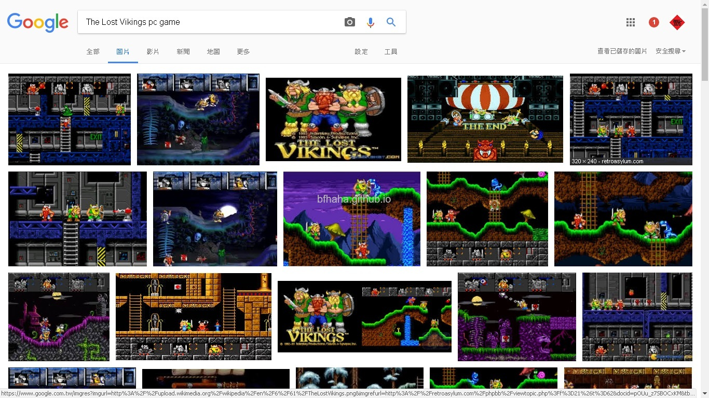
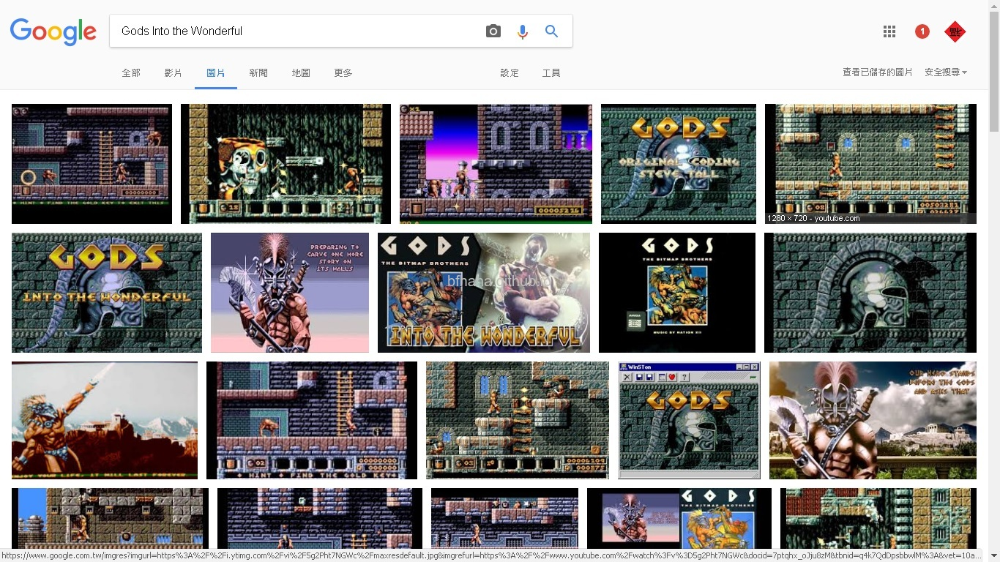
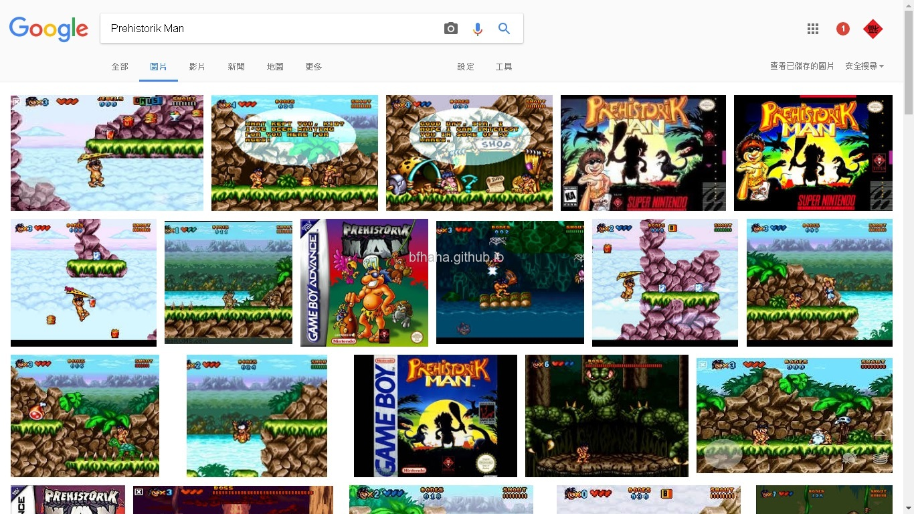
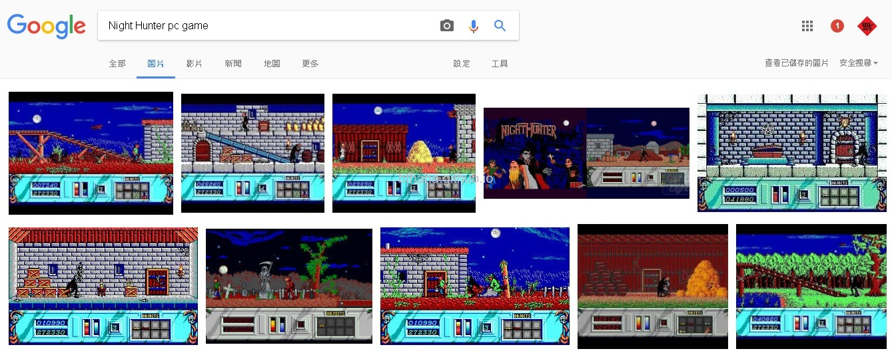
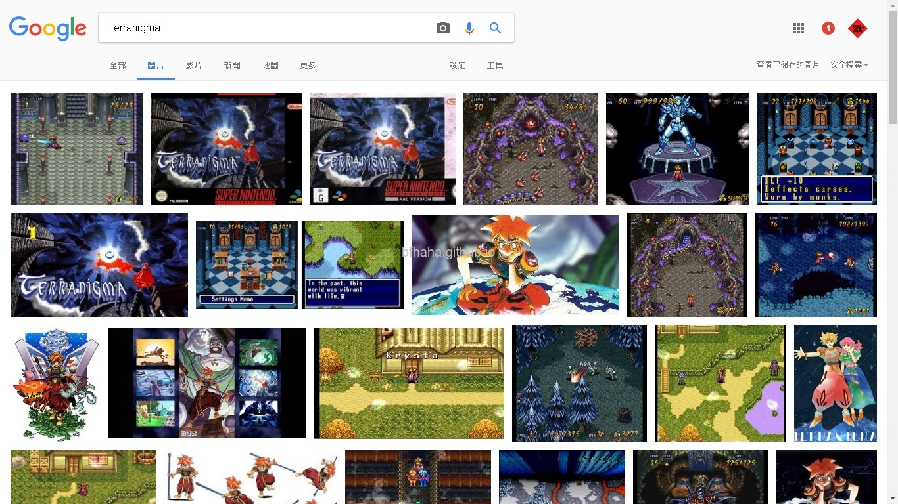
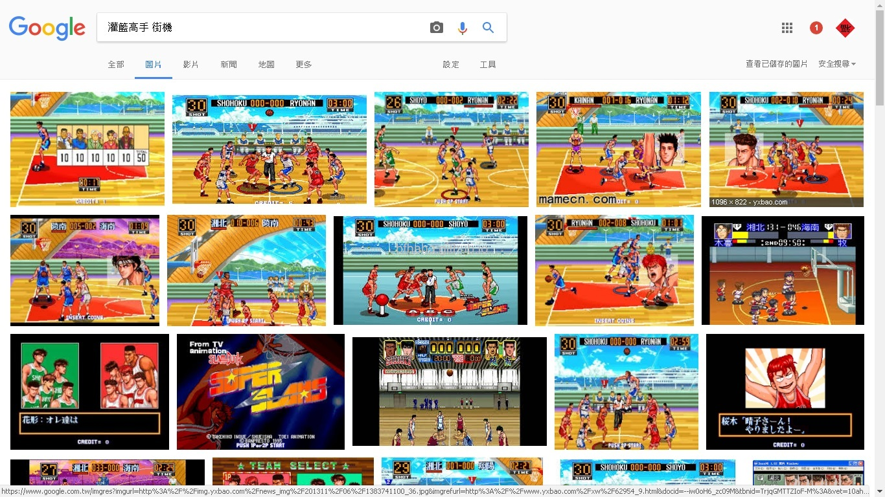
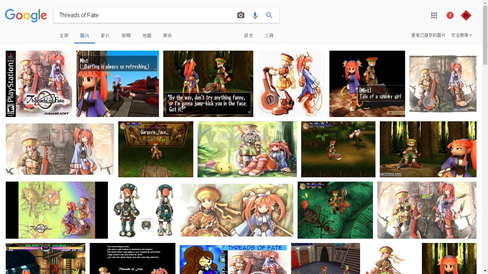
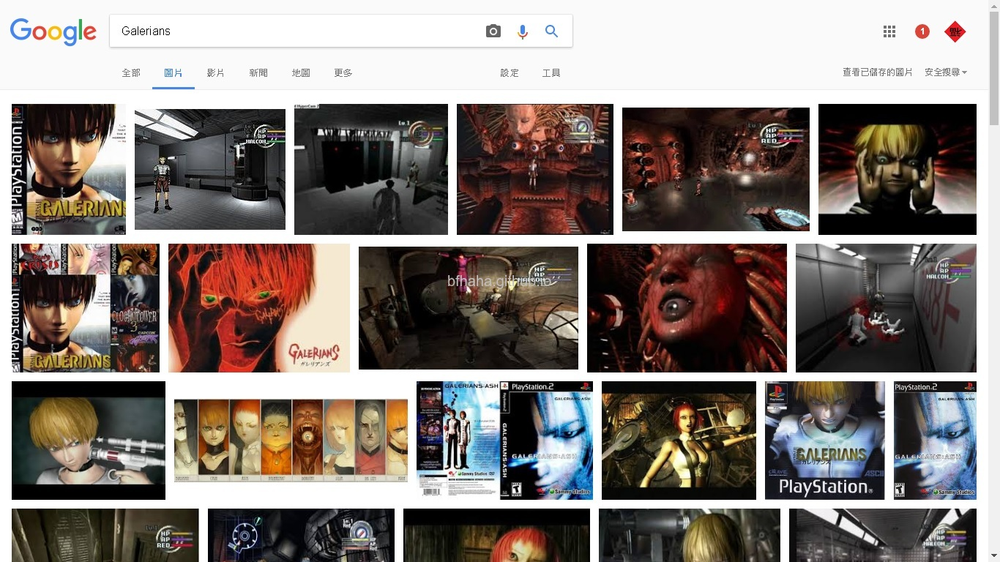
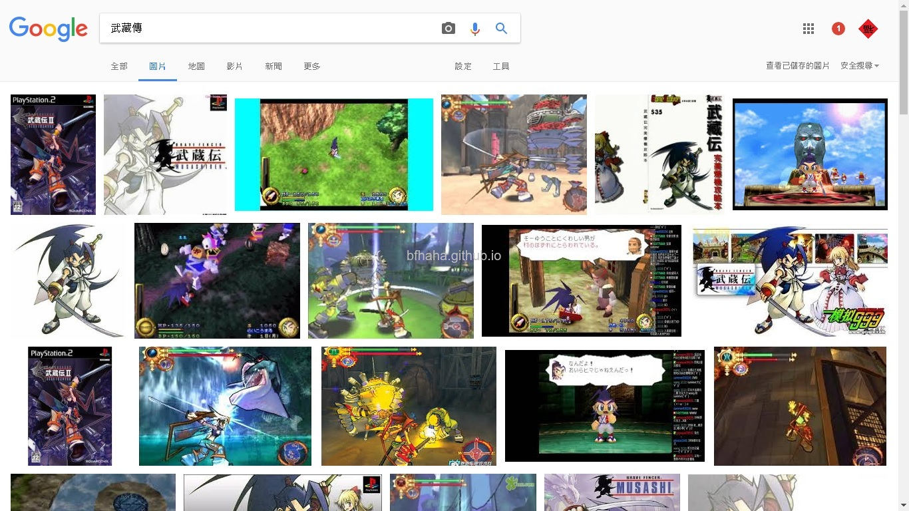
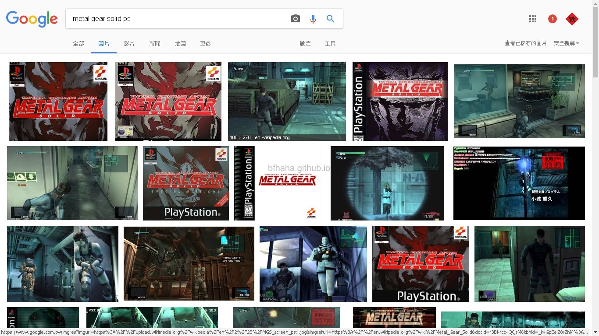

懷舊老遊戲
這裡介紹一些我以前小時候玩過的遊戲，長大之後忘了這些遊戲的名稱，或是只記得中文名稱但中文名稱在網路上不容易搜尋到精確的結果，所以也有附上英文名稱。
包括簡短地描述遊戲內容，讓忘了遊戲名稱的網友可以藉由對遊戲內容的描述關鍵字找到這些遊戲（因為筆者我當初就花了好一些心力才找到這些遊戲的名稱），不過因為年代久遠，可能會描述錯誤，所以最後當然也附上遊戲的的圖片。
遊戲主機是我當初玩到這個遊戲時所用的主機，這不太準確，因為有些遊戲可能移植到多種主機上。
這個網站可以查到很多DOS老遊戲，例如要找橫向捲軸類的遊戲，可以選擇[SEARCH BY]，再選[KEYWORD]，其中有一個[side-scroller]。
這裡也是一個DOS老遊戲資料庫。
失落的維京人
- 中文遊戲名稱：失落的維京人
- 英文遊戲名稱：The Lost Vikings
- 遊戲主機：PC
- 遊戲描述：很有趣的益智遊戲，三個維京人，各有各的特殊技能，例如紅髮可以奔跑跳躍；胖子的盾牌可以抵擋攻擊或是當跳板或是當降落傘；劍士可以砍擊，射箭。遊戲中必須利用這三個人獨特的技能來解決關卡中的困境。當年開發這個遊戲的團隊似乎就是鼎鼎大名的Blizzard，所以你可以在他們的官網上下載到這個遊戲。
- 遊戲圖片：

神劍封魔
- 中文遊戲名稱：神劍封魔
- 英文遊戲名稱：Gods Into the Wonderful
- 遊戲主機：PC
- 遊戲描述：一個鐵面肌肉男，可以拿飛刀射怪物，然後開機關。
- 遊戲圖片：

摩登原始人
- 中文遊戲名稱：摩登原始人
- 英文遊戲名稱：Prehistorik Man
- 遊戲主機：PC
- 遊戲描述：長得很可愛的原始人，我記得有一些隱藏地點可以跑出寶物。
- 遊戲圖片：

烏龍吸血鬼
- 中文遊戲名稱：烏龍吸血鬼
- 英文遊戲名稱：Night Hunter
- 遊戲主機：PC
- 遊戲描述：就是一個吸血鬼要吸人血來補充體力，體力夠的時候可以變成蝙蝠飛更快。
- 遊戲圖片：

天地創造
- 中文遊戲名稱：天地創造
- 英文遊戲名稱：Terranigma
- 遊戲主機：超級任天堂
- 遊戲描述：一個像孫悟空的男孩，拿著一根棒子闖關，可以吃水果會噎到，可以滑行，可以推開雕像。
- 遊戲圖片：

灌籃高手
- 中文遊戲名稱：灌籃高手
- 英文遊戲名稱：Slam Dunk Super Slams
- 遊戲主機：街機
- 遊戲描述：很好玩的籃球遊戲，比其他好玩太多太多了。有四隊可以選擇，湘北、陵南、海南、翔陽，每個球員都有特殊的技能，可以抄球、過人、灌籃，還可以第一時間灌籃(alleyoop)，也有三分球比賽、灌籃大賽。
- 遊戲圖片：

秘寶傳說
- 中文遊戲名稱：祕寶傳說
- 英文遊戲名稱：Threads of Fate
- 遊戲主機：PS
- 遊戲描述：可以選兩個女孩（其實是一男一女）其中之一當作主角開始展開冒險，男孩拿著一把很大的像鑰匙般的斧頭砍怪物，女孩則是用像哪吒的金色乾坤圈。遊戲中有一關魔王長得像黑白郎君，一半黑一半白。
- 遊戲圖片：

電子人種（迷失少年）
- 中文遊戲名稱：電子人種（迷失少年）
- 英文遊戲名稱：Galerians
- 遊戲主機：PS
- 遊戲描述：一個金髮少年從實驗室逃出來，可以注射藥劑使用超能力。
- 遊戲圖片：

武藏傳
- 中文遊戲名稱：武藏傳
- 英文遊戲名稱：Brave Fencer MUSASHIDEN
- 遊戲主機：PS
- 遊戲描述：這是我玩過最好玩的遊戲，武藏要拿著一把武士刀跟光之劍闖關，可以射出光之劍吸取怪物的特殊能力，可以向被綠色水晶中救出來的人學到新的攻擊技能，可以抓米克增加HP最大值，破到某一關時可以換睡袋，在野外睡覺時回復HP較快。有一關魔王是要學她跳舞。
- 遊戲圖片：

特攻神諜
- 中文遊戲名稱：特攻神諜
- 英文遊戲名稱：Metal Gear Solid
- 遊戲主機：PS
- 遊戲描述：這也是經典之作，我第一次玩的時候被敵人發現時我是真的嚇到，很成功地讓我身歷其境。可以拿到隱形衣或是相機，可以玩狙擊槍，可以玩遙控火箭。
- 遊戲圖片：
